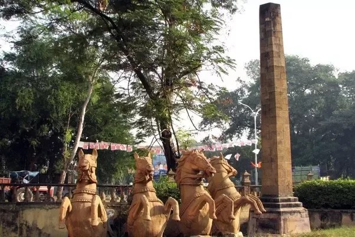

Nagpur is located at the exact centre of the India. Nagpur is the Tiger capital of India as many reserves are located in and around the city. It is popularly known as ‘Orange city of India’. A perfect destination for nature lovers and it also offers an unforgettable travel experience.
Things To Do
There are quite a few Nagpur tourist attractions in the city of Maharashtra. These places are popular among the tourists who come to visit this city of India. Some of the major places of interest in the city are the BalajiMandir, the Ambazari Lake, the Seminary Hill and the MaharajBaug and Zoo. The Balaji Mandir is one of the most popular tourist attractions of Nagpur. The deity worshipped in this temple is Lord Balaji. It is on the Seminary Hills. Ambazari Lake is one of the main tourist attractions in Nagpur. The children, in particular, find this place very amusing, as it offers a variety of popular games. The lake is the biggest and most beautiful of all the lakes that are in the city.
Tourist Places
1.Ramtek

Ramtek: Ramtek is approximately 50 KM away from the city of Nagpur. A must visit place for the history enthusiasts. There is a temple dedicated to Lord Rama from whom the name was given. Ramtek hosts the historic temple of Rama. It is believed that Ramtek was the place where Rama, the Hindu god, rested while he was in exile. According to Hindu history the ashram of the Hindu sage Agastya was situated close to Ramtek. The present temple was built by Raghuji Bhonsale, the Maratha ruler of Nagpur in 18th century after his victory over fort of Deogarh in Chindwara. This place is also related to the Sanskrit poet Kalidasa. It is believed that Kalidasa wrote Meghadūta in the hills of Ramtek.
2. Zero-mile Marker

Zero-mile marker: Zero Mile Stone is a monument built by the British during the” Great Trigonometrical Survey” of India in 1907. It serves as a starting point to measure the distance between places in Indian subcontinent.
3.Tadoba Wildlife Sanctuary

Tadoba Wildlife Sanctuary: For nature lovers. Tadoba National Park is a must visit place. Located at a distance of 150 KM away from the city of Nagpur, it is home to the Bengal tigers and other diverse species of animals, plants and birds. The prime attraction of this park is the jungle safari.
4.Chikhaldara

Chikhaldara: Chikhaldara is in Hill station. Located in Amravati District of Maharashtra. It is 231 KM away from the city of Nagpur. A lot of people visit this highland during the summer to have some releif from the high temperature of Nagpur.Chikhaldara was discovered by Captain Robinson of the Hyderabad Regiment in 1823. The Englishmen found it particularly attractive because the lush green hue of the place reminded them of England. When the leaves fell in September/October, they were reminded of autumn in England. There was even a proposal to make it the seat of the Government of India. British Commander selected leader of Chikhaldara named Mr.Sheikh Mehtab, who was landlord of Chikhaldara. He distributed land free of cost to Adivasis to build their houses. He ruled Chikhaldara for many years.